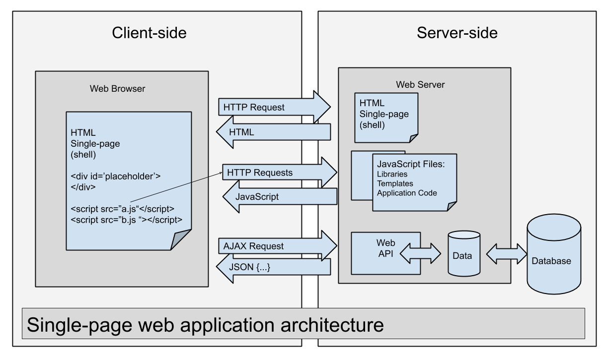
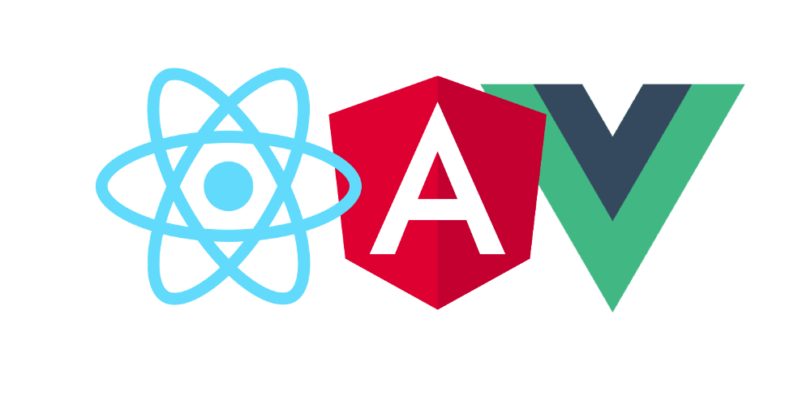

Introducción a las Webs Dinámicas
En los albores de la World Wide Web, a principios de los años 90, las páginas web eran documentos electrónicos estáticos, similares en concepto a los folletos informativos que podíamos encontrar en una oficina de turismo. El servidor almacenaba archivos HTML y, cada vez que un usuario los solicitaba mediante su navegador, enviaba siempre el mismo contenido, independientemente de quién lo solicitara o en qué momento. Aquella web primitiva cumplía una función informativa básica: mostrar contenido de lectura, pero carecía de cualquier tipo de interactividad o capacidad de adaptación a las necesidades específicas de cada usuario.
Imaginemos aquella web estática como una serie de carteles luminosos en una estación de tren. Todos los viajeros ven exactamente el mismo mensaje, las mismas indicaciones, y para ver una información diferente, literalmente tenían que caminar hasta otro cartel. Esta analogía nos ayuda a entender por qué aquellas primeras páginas web, aunque revolutionarias para su época, resultaban limitadas cuandoQueríamos ofrecer experiencias más ricas y personalizadas.
La Evolución hacia la Interactividad
A medida que la web fue creciendo en popularidad y complejidad, tanto los desarrolladores como los usuarios comenzaron a desear más. Las empresas querían ofrecer servicios más sofisticados, los usuarios querían interactuar con las aplicaciones, y la tecnología comenzó a evolucionar para satisfacer estas demandas. Así nacieron las primeras tecnologías del lado del servidor que permitían generar contenido dinámico: PHP, ASP, JSP, entre otros.
El primer gran cambio qual fue la capacidad de generar HTML bajo demanda desde el servidor. En lugar de almacenar archivos HTML estáticos, el servidor ejecutaba código que podía consultar una base de datos y construir una respuesta HTML personalizada para cada petición. Era como tener un servidoror automático que, en lugar de imprimir el mismo documento una y otra vez, adaptaba el contenido según quién lo solicitaba.
Esta aproximación, aunque revolucionaria, todavía tenía una limitación fundamental: cada interacción del usuario requería una recarga completa de la página. Cuando el usuario hacía clic en un botón, enviaba una petición al servidor, esperaba a que el servidor procesara la solicitud y devolviera una nueva página HTML completa, y luego el navegador reemplazaba Entireamente la página anterior por la nueva. Este proceso, conocido como postback, resultaba en una experiencia de usuario discontinua y a menudo frustrante, especialmente en conexiones de internet lentas.
Qué Es una Web Dinámica
Una web dinámica es aquella cuyo contenido se genera, modifica o adapta en el momento preciso de la solicitud del usuario, y puede continuar cambiando incluso después de que la página ha cargado en el navegador. Esta capacidad de personalización y respuesta en tiempo real es posible gracias a la colaboración constante entre dos mundos claramente diferenciados: el servidor (backend) y el cliente (navegador).
El adjetivo "dinámica" en este contexto tiene un significado muy específico que va más allá del simple hecho de que la página tenga animaciones o efectos visuales. Una página web dinámica es aquella que puede interactuar con el usuario de forma bidireccional, respondiendo a sus acciones de manera inmediata sin necesidad de recargar la página completa. Cuando haces clic en el botón "Me gusta" de una red social, escribes en un campo de búsqueda que te ofrece sugerencias automáticas, o desplazas tu feed de Instagram cargando más contenido, estás interactuando con una página web dinámica.

La Dinamización de la web ha transformado radicalmente nuestra relación con las aplicaciones en línea. Donde antes necesitábamos instalar programas específicos en nuestro ordenador para realizar tareas concretas, ahora podemos acceder a versiones web de hojas de cálculo, procesadores de texto, herramientas de diseño gráfico y aplicaciones empresariales complejas. Esta transformación ha sido posible gracias a la combinación de servidores cada vez más potentes, conexiones de internet más rápidas, y fundamentalmente, gracias a las técnicas que aprenderemos en este módulo.
El Servidor: Laravel
Desde la perspectiva del backend, el servidor funciona como una fábrica inteligente que construye respuestas personalizadas. Cuando un usuario realiza una petición, Laravel ejecuta código que puede conectar a una base de datos para obtener contenido actualizado, procesar lógica de negocio compleja, realizar cálculos, y devolver el resultado en el formato adecuado: bien sea una vista HTML completa, o datos en formato JSON para peticiones parciales.

La diferencia fundamental entre una web tradicional y una web dinámica con AJAX réside en el tipo de respuesta que el servidor envía. En una web tradicional, cada vez que necesitamos actualizar cualquier fragmento de información, el servidor devuelve una página HTML completa con todo su contenido: la cabecera, la navegación, el pie de página, y el contenido específico que solicitamos. Esto significa que el navegador tiene que descargar y procesar una gran cantidad de información redundante en cada petición.
En una web dinámica, el servidor puede devolver únicamente los datos necesarios en formato JSON, sin todo el HTML adicional. Esta aproximación es significativamente más eficiente, ya que solo se transfieren los datos que realmente necesitamos actualizar. Imaginemos la diferencia entre recibir una carta completa cada vez que queremos saber la hora, o recibir simplemente el número "14:32" que actualiza un reloj digital.
El Cliente: JavaScript
Una vez que la página inicial llega al navegador, entra en juego JavaScript para proporcionar interactividad cliente-side. Este código permite que la página reaccione a las acciones del usuario de forma inmediata, sin necesidad de comunicarse con el servidor para cada pequeña interacción.
JavaScript es un lenguaje de programación que se ejecuta directamente en el navegador del usuario. A diferencia de PHP, que se ejecuta en el servidor antes de Enviar la página, JavaScript se ejecuta después de que la página ha cargado, permitiendo interacción instantánea. Esta diferencia temporal es crucial para entender el paradigma de las webs dinámicas.
El DOM: El Puente entre JavaScript y la Página
Para interactuar con la página web, JavaScript utiliza el DOM (Document Object Model). El DOM es una representación en forma de árbol de todos los elementos de una página web, y JavaScript nos proporciona una API completa para Manipularlo.
Gracias al DOM, JavaScript puede:
- Seleccionar elementos de la página para trabajar con ellos
- Leer y modificar el contenido de esos elementos
- Cambiar atributos como clases, estilos, o propiedades src de imágenes
- Responder a eventos como clics, escritura, o movimiento del ratón
- Crear nuevos elementos y añadirlos a la página dinámicamente
- Eliminar elementos existentes
El DOM transforma el HTML estático en un conjunto de objetos con propriedades y métodos que JavaScript puede manipular. Cada etiqueta <div>, cada párrafo <p>, cada botón <button> se convierte en un objeto en este árbol sobre el cual podemos actuar programáticamente.
AJAX: La Comunicación Asíncrona
La pieza fundamental que conecta el mundo JavaScript del cliente con el mundo Laravel del servidor es AJAX (Asynchronous JavaScript and XML). AJAX no es un lenguaje de programación nuevo, sino una técnica que utiliza objetos y métodos existentes para realizar peticiones HTTP en segundo plano.
La palabra "asíncrona" es clave aquí. Tradicionalmente, cuando un navegador necesita información del servidor, detiene todo y espera hasta recibir la respuesta completa. Con AJAX, la petición se realiza en segundo plano, y el navegador puede continuar respondiendo a otras interacciones del usuario mientras espera la respuesta.
Imaginemos la diferencia entre hacer una llamada telefónica (síncrona, debemos esperar a que el otroCOOJA conteste y mantener la línea ocupada) y enviar un mensaje de texto (asíncrona, podemos seguir haciendo otras cosas mientras el destinatario lee y responde).
La Sinergia: Laravel + JavaScript
La verdadera potência de las webs dinámicas réside en la colaboración fluida entre el cliente y el servidor. Esta Comunicación asíncrona, realizada con la técnica AJAX, permite crear experiencias de usuario ricas y fluidas que rivalizan con las aplicaciones de escritorio.

Gracias a esta sinergia, podemos implementar características que serían imposibles o extremadamente molestas en una web tradicional:
La validación de formularios en tiempo real permite verificar la disponibilidad de un nombre de usuario o dirección de correo electrónico mientras el usuario escribe, sin necesidad de enviar el formulario completo y esperar la respuesta. El usuario recibe retroalimentación instantánea, mejorando significativamente la experiencia de usuario.
El búsqueda con autocompletado permite mostrar sugerencias de búsqueda mientras el usuario escribe cada letra, consultas frecuentes a la base de datos por cada pulsación de tecla. El usuario encuentra lo que busca más rápido y con menos esfuerzo.
La carga de contenido bajo demanda permite cargar más elementos cuando el usuario llega al final de una lista, en lugar de cargar todo de una vez. Esto Reduce significativamente la cantidad de datos transferidos y mejora los tiempos de carga percibidos.
Las notificaciones en tiempo real permiten actualizar la interfaz cuando ocurre algo relevante en el servidor, como un nuevo mensaje o una actualización de un amigo, sin que el usuario tenga que recargar la página manualmente.
Los contadores y estadísticas dinámicas permiteActualizar números en pantalla instantáneamente cuando el usuario interactúa, sin esperar la recarga de la página completa.
Arquitectura de una Web Dinámica con Laravel
Cuando construimos una web dinámica con Laravel, la arquitectura típica sigue un flujo bien definido que repetitive en cada interacción:
El cliente (navegador) carga una página HTML inicial que incluye el CSS y JavaScript necesarios. Esta página inicial es la "base" desde la cual el usuario interactuará con la aplicación.
JavaScript detecta eventos del usuario: clics en botones, escritura en campos, desplazamiento de la página, etc. Cada uno de estos eventos puede desencadenar una acción específica.
fetch() envía una petición HTTP al servidor. Esta función nativa de JavaScript permite realizar peticiones HTTP asíncronas. La petición incluye la URL del endpoint, el método HTTP (GET, POST, PUT, DELETE), y opcionalmente datos en formato JSON.
Laravel recibe la petición en una ruta de API definida en el archivo de rutas. El framework examina la URL y el método HTTP para determinar qué código debe ejecutarse.
El controlador ejecuta la lógica necesaria: consulta la base de datos, procesa los datos, valida la entrada, y prepara la respuesta. Este es el corazón de la lógica de negocio de nuestra aplicación.
Laravel devuelve una respuesta JSON. El framework serializa automáticamente los datos devueltos por el controlador a formato JSON, estableciendo las cabeceras appropriateas.
JavaScript recibe los datos y actualiza el DOM. El código cliente procesa la respuesta JSON y modifica la página según sea necesario: añadiendo nuevos elementos, actualizando texto, cambiando clases CSS, etc.
Esta separación clara entre la lógica de presentación (JavaScript) y la lógica de negocio (Laravel) facilita enormemente el desarrollo y mantenimiento de aplicaciones complejas. Cada parte tiene una responsabilidad claramente definida, y los cambios en una no afectan directamente a la otra.
Por Qué Separar Cliente y Servidor
Esta separación entre cliente y servidor sigue el principio de separación de preocupaciones (Separation of Concerns), uno de los fundamentos del diseño de software moderno. En lugar de tener toda la lógica mezclada en un único lugar, dividimos la aplicación en capas con responsabilidades específicas.
El servidor (Laravel) se encarga de:
- Gestionar la lógica de negocio y las reglas del dominio
- Conectar con la base de datos
- Validar y sanitizar datos de entrada
- Autenticar y autorizar usuarios
- Devolver datos en un formato estándar (JSON)
El cliente (JavaScript) se encarga de:
- Mostrar la interfaz de usuario
- Capturar las interacciones del usuario
- Comunicar con el servidor cuando sea necesario
- Actualizar la interfaz dinámicamente
- Proporcionar retroalimentación inmediata
Esta separación tiene múltiples ventajas. Permite que el mismo backend sirva a diferentes aplicaciones: una aplicación web, una aplicación móvil, o incluso otros servicios. Además, facilita el mantenimiento al tener código más organizado, permite que diferentes desarrolladores trabajen en el frontend y backend simultáneamente y mejora el rendimiento al transferir solo los datos necesarios.
Frameworks de Frontend
Aunque este módulo se centra en JavaScript vanilla, es importante mencionar el ecosistema de frameworks que existen para construir interfaces de usuario de forma más productiva. Estos frameworks utilizan el DOM de manera optimizada y nos permiten escribir interfaces complejas con menos código.

Los principales frameworks de frontend actuales son:
React, desarrollado por Facebook (Meta), es el framework más popular actualmente. Utiliza un paradigma declarativo donde definimos el estado de la interfaz y React se encarga de actualizar el DOM automáticamente. Introduce el concepto de componentes reutilizables y un virtual DOM para optimizar las actualizaciones. Su flexibilidad y el ecosistema masivo de bibliotecas lo convierten en una opción versátil para proyectos de cualquier tamaño.
Vue es un framework progresivo que puede adoptarse de forma incremental. Fue creado por Evan You y combina las mejores ideas de Angular y React con una curva de aprendizaje suave. Su sistema de reactividad automática es particularmente elegante, permitiendo crear interfaces reactivas con código mínimo. Vue puede integrarse parcialmente en proyectos existentes sin necesidad de reescribir toda la aplicación.
Angular es un framework completo de Google que incluye muchas funcionalidades out-of-the-box: inyección de dependencias, routing avanzado, formularios robustos, cliente HTTP integrado, testing configurado, y más. Utiliza TypeScript por defecto y sigue un patrón más opinionado, proporcionando una estructura clara para aplicaciones grandes. Esta opinión formada puede acelerar el desarrollo en equipo al tener convenciones claras.
Svelte representa un enfoque diferente: es un compilador que transforma el código declarativo en código vanilla optimizado en tiempo de compilación. No utiliza un virtual DOM en tiempo de ejecución, lo que resulta en aplicaciones muy rápidas y bundles pequeños. Su sintaxis elegante y su enfoque innovador lo han convertido en una alternativa popular.
En este módulo aprenderemos los fundamentos del DOM y AJAX con JavaScript vanilla, conocimientos que son transversales a cualquier framework. Cuando luego utilicemos React, Vue o Angular, entenderemos qué ocurre "debajo del capó" y podremos depurar problemas de forma más efectiva. Además, comprender los fundamentos nos ayuda a tomar decisiones de diseño informadas y a entender las limitaciones y fortalezas de cada herramienta.